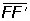
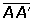
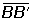
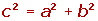
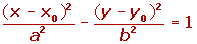
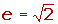

Resumen de ecuación de la hipérbola
Resumen de ecuación de la hipérbola
- Hipérbola
- Excentricidad
- Ecuación reducida
- Ecuación reducida OY
- Ecuación hiperbola OX
- Ecuación hiperbola a OY
- Hipérbola equilátera
- Hipérbola equilátera II
Hipérbola
Es el lugar geométrico de los puntos del plano cuya diferencia de distancias a dos puntos fijos llamados focos es constante.
Elementos de la hipérbola:
1Focos: Son los puntos fijos F y F'.
2Eje focal: Es la recta que pasa por los focos.
3Eje secundario o imaginario: Es la mediatriz del segmento FF'.
4Centro: Es el punto de intersección de los ejes.
5Vértices: Los puntos A y A' son los puntos de intersección de la hipérbola con el eje focal.
Los puntos B y B' se obtienen como intersección del eje imaginario con la circunferencia que tiene por centro uno de los vértices y de radio c.
6Radios vectores: Son los segmentos que van desde un punto de la hipérbola a los focos: PF y PF'.
7Distancia focal: Es el segmento  de longitud 2c.
8Eje mayor: Es el segmento  de longitud 2a.
9Eje menor:Es el segmento  de longitud 2b.
10Ejes de simetría: Son las rectas que contienen al eje real o al eje imaginario.
11Asíntotas: Son las rectas de ecuaciones: 
12Relación entre los semiejes: 
Excentricidad
La excentricidad mide la abertura mayor o menor de las ramas de la hipérbola.
Ecuación reducida de la hipérbola
Si el eje real está en el eje de abscisas las coordenadas de los focos son:
Ecuación de la hipérbola con los focos en el eje OY
Si el eje real está en el eje de abscisas las coordenadas de los focos son:
Ecuación de la hipérbola con eje paralelo a OX, y centro distinto al origen
Si el centro de la hipérbola es C(x0, y0) y el eje principal es paralelo a OX, los focos tienen de coordenadas F(X0+c, y0) y F'(X0−c, y0). Y la ecuación de la hipérbola será:

Al quitar denominadores y desarrollar las ecuaciones se obtiene, en general, una ecuación de la forma:
Donde A y B tienen signos opuestos.
Ecuación de la hipérbola con eje paralelo a OY, y centro distinto al origen
Si el centro de la hipérbola C(x0, y0) y el eje principal es paralelo a OY, los focos tienen de coordenadas F(X0, y0+c) y F'(X0, y0−c). Y la ecuación de la hipérbola será:

Al quitar denominadores y desarrollar las ecuaciones se obtiene, en general, una ecuación de la forma:
Donde A y B tienen signos opuestos.
Ecuación de la hipérbola equilátera
Las hipérbolas en las que los semiejes son iguales se llaman equiláteras, por tanto a = b. Y su ecuación es:
Las asíntotas tienen por ecuación:
,
Es decir, las bisectrices de los cuadrantes.
La excentricidad es: 
Ecuación de la hipérbole equilátera referida a sus asíntotas
Para pasar de los ejes OX, OY a los determinados por las asíntotas, bastará dar un giro de −45° alrededor del origen de coordenadas. Quedando la ecuación como:

Si efectuamos un giro de 45° en los ejes, la hipérbola que queda en el segundo y cuarto cuadrante y su ecuación será: